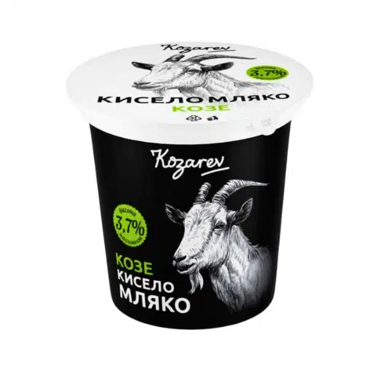

Кисело Мляко Shop
Lactobacillus е уникален пробиотик, съдържащ се в киселото мляко, който помогает инхибировать вредные бактерии, такие как Salmonella и Helicobacter pylori, а также E. Coli.
Learn More

Lactobacillus е уникален пробиотик, съдържащ се в киселото мляко, който помогает инхибировать вредные бактерии, такие как Salmonella и Helicobacter pylori, а также E. Coli.
Learn More